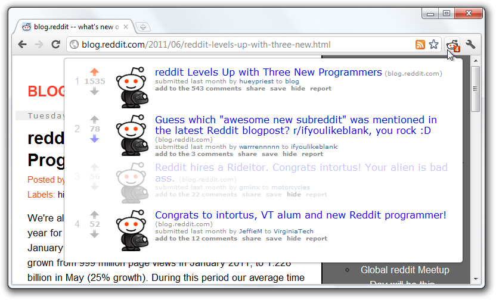
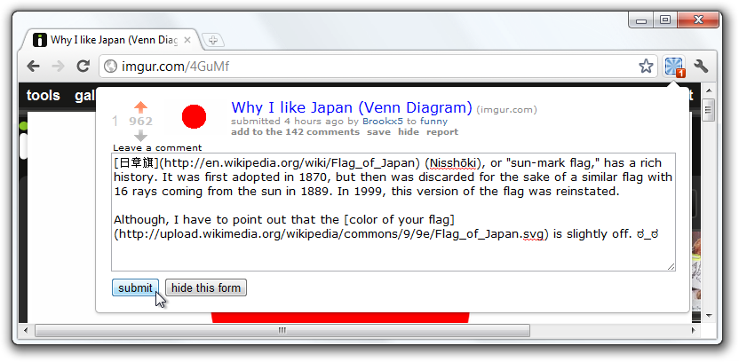
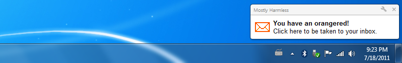
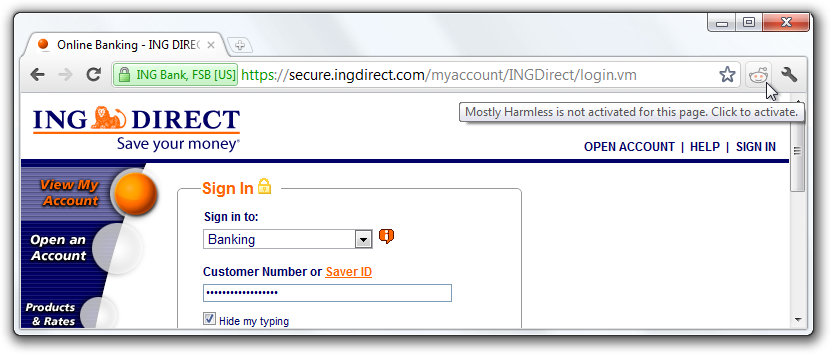
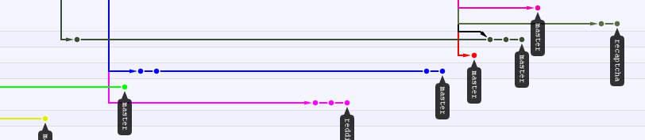
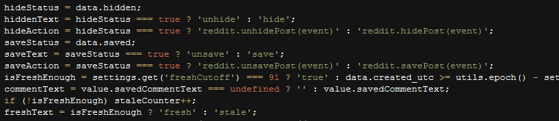
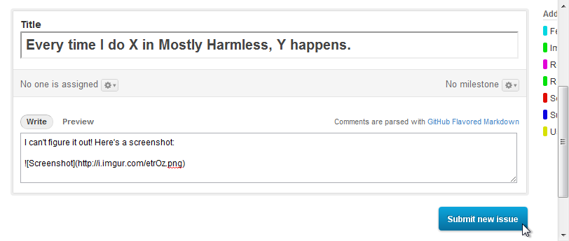

Mostly Harmless looks up the page you are currently viewing to see if it has been submitted to reddit. If so, you can see everywhere it has been posted, vote the story up or down, and even save, hide, and report the post straight from the popup.
Comments and discussion are a huge part of reddit, so it was important to bake that capability right into Mostly Harmless. You can add a comment from the popup, and if you’re typing a particularly long comment and accidentally close the popup, Mostly Harmless should still have it cached!
Every redditor knows the joy of getting an orangered. Every redditor also knows that finding out what it’s for, who it’s from, and what it says is half of the fun! Mostly Harmless will check for orangereds at a specified interval and display a desktop notification when you get one. Of course, you can turn this off if you like.
Your browsing habits are your own, and you probably don’t want every page you visit checked on reddit. Instead, Mostly Harmless has an option to only look up pages when you click its icon. Of course that could get tedious, so Mostly Harmless also supports excluding lookups based on domain and regular expression matches.
If you would like to contribute to the project with your own code or translations, please fork Mostly Harmless on Github! After you make your changes, submit a pull request so I can merge it into the master branch. If your code or translations are used in Mostly Harmless, I'll link to your reddit profile on the credits page as well!
Or, you can run git clone to grab the files read-only.
git clone git://github.com/Kerrick/Mostly-Harmless.gitIf you would like to install Mostly Harmless from its source code, visit the github downloads page, and click on the latest tagged download package for the most recent stable release. Alternatively, you can grab the latest tarball, but consider that it could be in an unstable developmental state.
To install from source:
chrome://extensionsIf you find a bug in Mostly Harmless, or if you would like to request a new feature, doing so is easy! Simply visit github.com/Kerrick/Mostly-Harmless/issues/new and submit a ticket! Be sure to be very descriptive so I can figure out exactly what is wrong, or precisely what you are requesting.
I was told by the reddit admins on #reddit-dev to make the minimum interval for checking orangereds five minutes. If you think Mostly Harmless should be able to poll http://www.reddit.com/api/me.json more often, please send a PM to chromakode, and then send one to spladug.
<chromakode> KerrickLong, can you please reduce the mail interval at minimum every 5 minutes? <KerrickLong> Five minutes? Yeah I can. <chromakode> also, can you please add app=mh as an extra param to your api requests? that way we can tell you some interesting stats about its utilization! <KerrickLong> chromakode, if I make the orangereds poll /api/me.json instead of /messages/new, could I reduce the interval since it will be a LOT less load? <spladug> KerrickLong, /api/me.json would be preferable, but 5 minutes would still be nice. we've seen some crazy high load from shine the last few days and would like to try to avoid having the same issue again
The reddit alien logo is a trademark of Conde Nast Digital, and I am required to apply for a license to use it. I have done so, and am waiting to hear back. Until then, I cannot use Snoo.
For those that don't speak regular expressions, I'll go over the default Excluded Regex patterns here so you can know which ones to get rid of.
chrome://.*This excludes all Google Chrome pages such as the new tab page, Chrome settings, et. al.
chrome-extension://.*This excludes all Chrome Extension pages such as the Mostly Harmless options page.
view-source://.*This excludes the tabs that open when you view the source code of a web page.
ftp://.*This excludes sites that use the FTP protocol.
https?://www\.google\.com/search.*This excludes Google Search results pages.
https?://search\.yahoo\.com/search.*This excludes Yahoo Search results pages.
https?://www\.bing\.com/search.*This excludes Bing Search results pages.
https?://www.reddit.com/(?:r/(?:\w|\+)+/?)?(?:$|\?count)This excludes the reddit homepage, and the homepage for any subreddit. It also excludes the paginated versions.
localStorage abstractionCopyright © 2011 by Kerrick Long
Permission is hereby granted, free of charge, to any person obtaining a copy of this software and associated documentation files (the "Software"), to deal in the Software without restriction, including without limitation the rights to use, copy, modify, merge, publish, distribute, sublicense, and/or sell copies of the Software, and to permit persons to whom the Software is furnished to do so, subject to the following conditions:
The above copyright notice and this permission notice shall be included in all copies or substantial portions of the Software.
THE SOFTWARE IS PROVIDED "AS IS", WITHOUT WARRANTY OF ANY KIND, EXPRESS OR IMPLIED, INCLUDING BUT NOT LIMITED TO THE WARRANTIES OF MERCHANTABILITY, FITNESS FOR A PARTICULAR PURPOSE AND NONINFRINGEMENT. IN NO EVENT SHALL THE AUTHORS OR COPYRIGHT HOLDERS BE LIABLE FOR ANY CLAIM, DAMAGES OR OTHER LIABILITY, WHETHER IN AN ACTION OF CONTRACT, TORT OR OTHERWISE, ARISING FROM, OUT OF OR IN CONNECTION WITH THE SOFTWARE OR THE USE OR OTHER DEALINGS IN THE SOFTWARE.